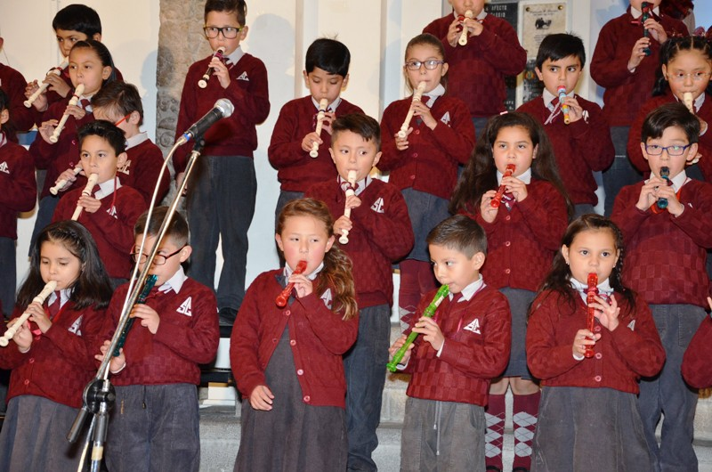

Actividades Pasadas.:
| Festival de Música.: | ||
|  | ||
El pasado 30 de mayo, continuando los festejos por el dia de la madre los niñ@s de 1º a 3º de Primaria, presentaron el Festival de Música demostrando mucha destreza, habilidad y sentimiento. |
||
| Toma de nombre promoción MAGIS 2016.: | ||
 |
||
 |
 |
|
 |
 |
|
 |
 |
|
 |
 |
|
El pasado 30 de marzo, en el Templo de la Compañía de Jesús los estudiantes de la promoción, en acto de fe y compromiso realizaron la Toma de nombre MAGIS 2016, identificados con el lema representativo Por amor, no por temor. Felicidades MAGIS |
||
Actividades Agosto 2016.:
Fecha: |
Actividad.: |
01/08/16 |
Suspensión de Clases. |
02/08/16 |
Hora cívica MARISCAL ANTONIO JOSE DE SUCRE. |
02/08/16 |
Homenaje 6 de Agosto. |
02-03/08/16 |
Congreso Científico - Ciclo Modular. |
03/08/16 |
Taller PP.FF. Redes Sociales 19:00 hrs. |
06/08/16 |
Día de la Patria. |
07/08/16 |
Rally de autos - Paseo en bicicletas. |
11-13/08/16 |
Jornada de Reflexión 4º de Secundaria. |
12/08/16 |
Paseo 1º de Secundaria. |
16/08/16 |
Presentación producción Literaria 2º de Secundaria. |
18-20/08/16 |
Jornada de Reflexión 4º de Secundaria. |
19/08/16 |
Paseo 2º de Secundaria. |
20/08/16 |
Presentación Gimnasia de 1º a 6º de Primaria. |
24/08/16 |
Evaluación modular Nº 5. |
25/08/16 |
Entrevista PPFF. |
25/08/16 |
2º Turno del Quinto Periodo. |
25/08/16 |
Charla est. 2º de Secundaria. (Lic. Jackeline Barriga) |
26/08/16 |
Inicio modular Nº 6. |
26/08/16 |
Saludo a la Virgen. |
26/08/16 |
Visita al Jardín Botánico 2º de Primaria. |
26/08/16 |
Paseo recreativo 5º y 6º de Secundaria. |
27/08/16 |
Taller PPFF. 2º de Secundaria. (Lic. Jackeline Barriga) |
30/08/16 |
Campamento 3º de Secundaria. (del 30/08 al 02/09/) |